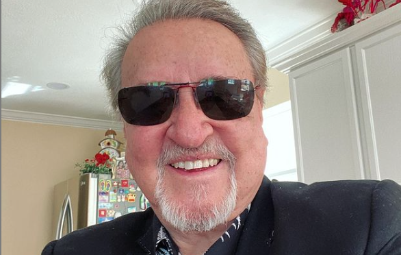

voltar
Carlos Villagran

Carlos Villagran
Nascimento: 12 de janeiro de 1944
Filho(a)(s): 6
idade:77 anos
sua historia e feitos:
Carlos Villagrán Eslava (Cidade do México, 12 de janeiro de 1944) é um ator e humorista mexicano, mundialmente conhecido por interpretar o garoto Quico (mais tarde, Kiko), no seriado Chaves.[1] Em 1979, ele deixou o seriado e tentou fazer uma carreira solo com o Quico, mas esta não foi tão exitosa. Após alguns insucessos na televisão, passou a fazer shows com o personagem e assim permaneceu por praticamente toda a sua carreira.
Em 2013 foi nomeado embaixador em Porto Alegre, uma das doze sedes da Copa do Mundo de 2014 no Brasil. Em 1º de junho de 2018, Villagran anunciou que pararia definitivamente de interpretar o personagem Quico para trabalhar em outros projetos.